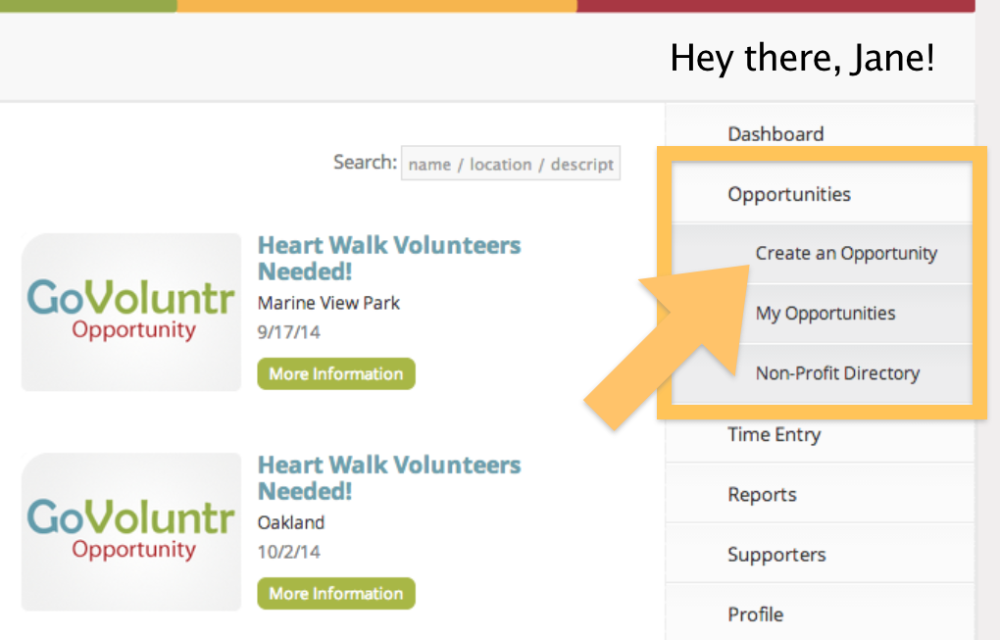

Head over to the menu bar on the right. Click "Opportunities", and then "Create an Opportunity" in the submenu that opens. This will bring you to a form where you can enter information about your opportunity before making it public.

Fill Out the Form
Mouse over the screenshot below to see descriptions and tips about the highighted form fields. Be sure to complete all of the required fields!
Great! Now all the details for your opportunity have been ironed out. Click "Create Opportunity” to make it public. Next, we'll check on who has signed up and begin preparing for the opportunity.